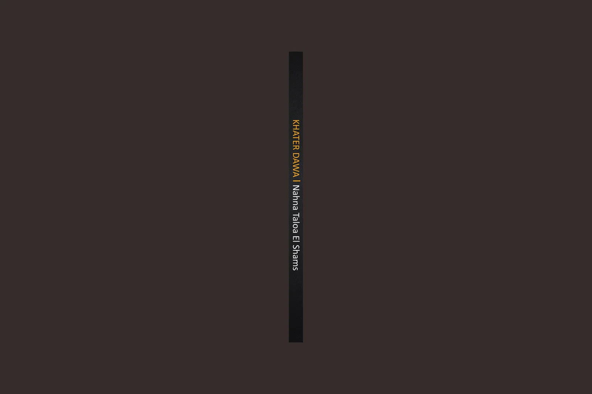
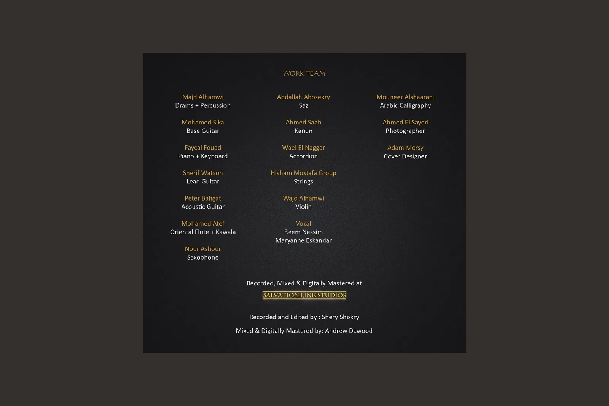
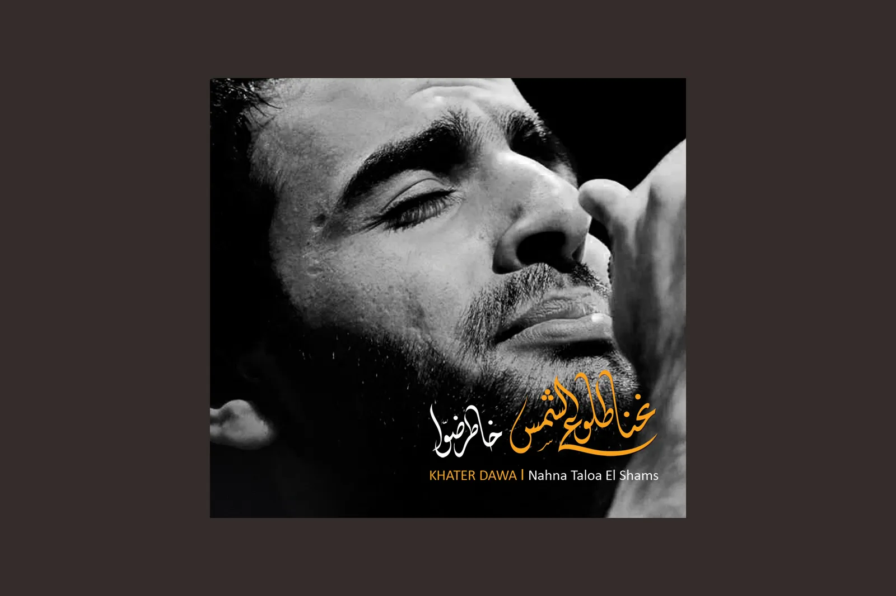
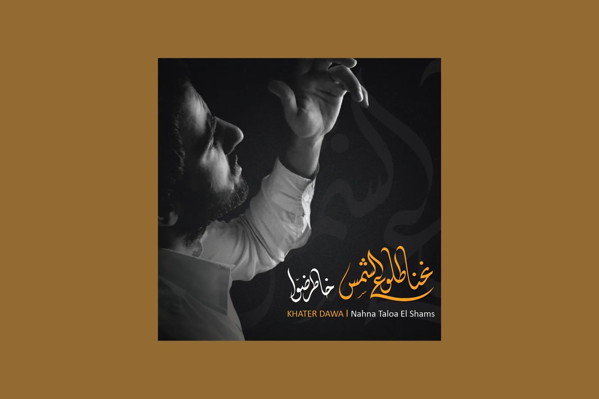
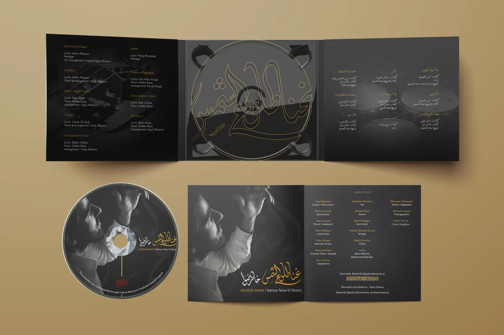
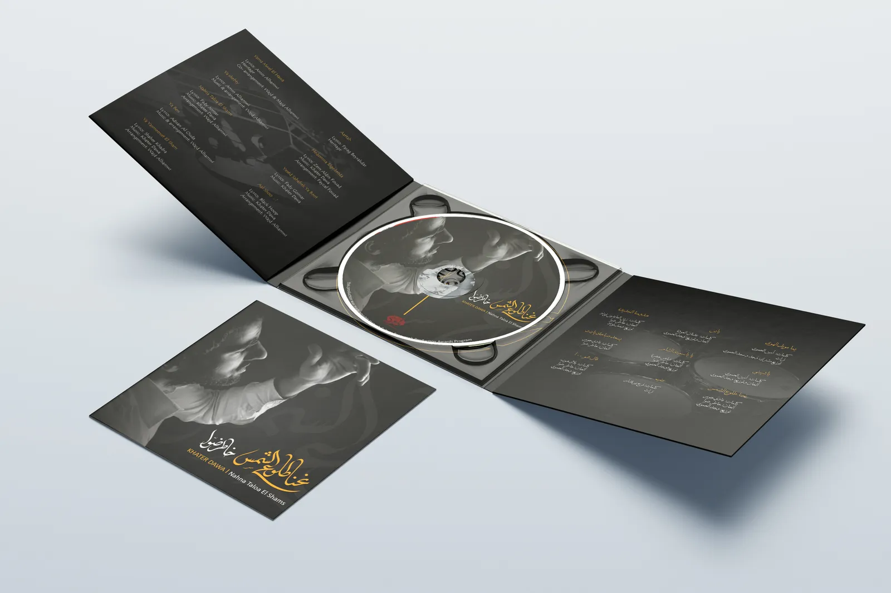
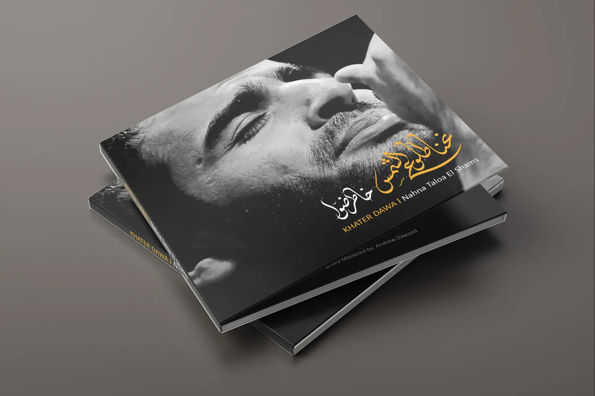

When the war broke out in his old homeland, Khater Dawa, born in Hama, Syria in 1989, was studying singing and short-necked sounds at the renowned Cairo Opera and the Arab Oud House. During this time he created his first group, with which he played oriental music, released his first album “Nahna Taloa El Shams” and was immediately invited to major festivals in the Arab world. He is currently studying world music with Oud at the pop academy in Mannheim and is working with his colleagues on a project on oriental folk music.
For Khater Dawa, music is a means of expressing his feelings and thoughts. With his compositions, which are based on traditional oriental music but also include elements of jazz and blues, he wants to build bridges between cultures and peoples. In doing so, he draws on his own experiences as a refugee who has had to leave his home country and start a new life in Germany.
I was commisioned to design the CD cover for his first album "Nahna Taloa El Shams" which translates to "We are the sunrise". The design incorporates photographs of khater Dawa taken during his performances, combined with the name of the album in both Arabic and English. The name in Arabic is written in a calligraphic style that reflects the traditional roots of his music, while the English text is presented in a modern font to represent his contemporary approach. The overall design aims to capture the essence of Khater Dawa's music style, and convey the message of hope and new beginnings that his music represents.






